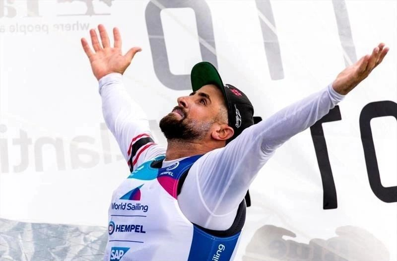
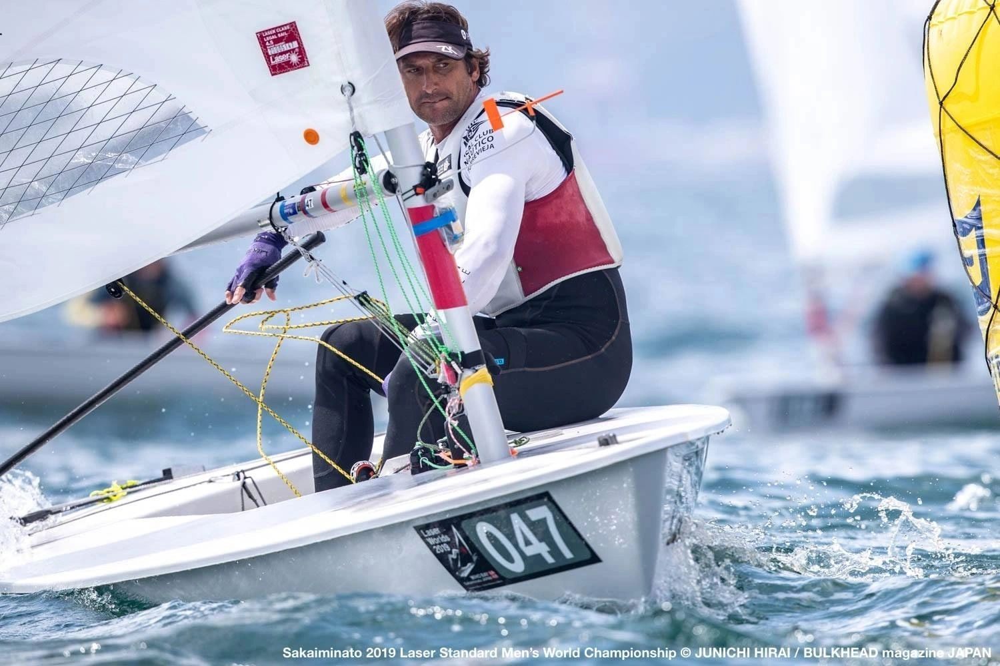
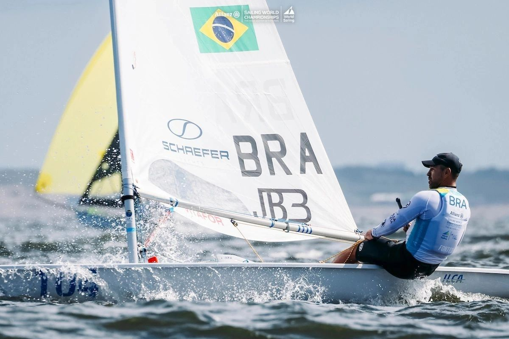

Coaching de vela de elite — virtual e personalizado. Boat handling, estratégia, fitness e mindset com quem viveu cada ciclo olímpico na prática.

Bruno Fontes começou no Laser aos 8 anos, em 1988, no Lagoa Iate Clube de Florianópolis. O que começou como um esporte formativo se tornou uma jornada olímpica de 33 anos que o levou a todos os continentes.
Tricampeão olímpico (Beijing 2008, Londres 2012, Paris 2024) e coach olímpico da China (Tóquio 2024) e Trinidad & Tobago (Rio 2016), Bruno traduz três décadas de experiência de alto rendimento em programas práticos para atletas de qualquer nível.
Todos os programas incluem entrevista de definição de metas e acompanhamento via WhatsApp.

"A diferença entre um atleta e um campeão está nos detalhes que só a experiência olímpica ensina."
Tacks, gybes, partidas e saídas. A diferença entre um atleta mediano e um campeão está nos detalhes técnicos que nenhum livro consegue ensinar — mas a experiência olímpica, sim.
Leitura de vento, posicionamento na largada, tomada de decisão sob pressão. Bruno treinou atletas que conquistaram ouro olímpico. Esses padrões estão nos seus programas.
Endurance, core, força e mobilidade adaptados para vela. Parceria com a plataforma Bridge Athletic para programas científicos e progressivos.
Foco, resiliência, gestão de pressão. Bruno viveu três ciclos olímpicos — e sabe como preparar a mente para competição de alto rendimento.
Alimentação otimizada para atletas de vela: energia para hiking, recuperação pós-treino, hidratação em regata. Estratégias práticas, não dietas impossíveis.
"Bruno is a super passionate coach as well as a high-level sailor himself. His experience in both Laser sailing and venue analysis helped me a lot. All my Chinese teammates love to work with him."
"Bruno isn't just a great athlete and coach — he is one of the guys with more knowledge and passion for sailing I've ever met. Today we are working together and I have improved a lot."
"Bruno ha sido para mi un mentor — me ayudó tantísimo en mi camino como atleta. Es capaz de trasmitirte el filing que debes sentir en cada momento de tu aprendizaje."

33 anos de jornada olímpica traduzidos para o universo corporativo
Bruno compartilha os bastidores do sucesso construído ao longo de mais de três décadas no esporte. Com vitórias memoráveis e aprendizados nas derrotas, sua trajetória percorreu diferentes culturas em todos os continentes.
De forma prática e envolvente, ele conecta a experiência olímpica ao mundo corporativo — revelando que sucesso é sempre uma combinação de estratégia, disciplina, consistência, superação e paixão.
💬 Solicitar PalestraComo funciona o coaching virtual?
100% online via Google Meet. Bruno analisa vídeos, define metas e conduz sessões de mentoring com acompanhamento via WhatsApp.
Para qual nível de atleta é indicado?
De iniciantes ao alto rendimento. Bruno já treinou Lijia Xu (ouro Londres 2012) e Jorge Zarif (campeão mundial). O programa é adaptado ao seu nível e objetivos.
O que está incluído no fitness?
Programa via Bridge Athletic ou Training Peaks cobrindo Endurance, Core, Força e Mobilidade — adaptados às demandas da vela.
Qual a diferença entre os pacotes?
SAILING (U$200): fitness + 2h coaching técnico/tático. FITNESS (U$100): só condicionamento. MASTERS (U$100): específico para categoria masters.
Bruno faz palestras corporativas?
Sim. "Um Sonho Nunca Será em Vão" traz 33 anos de carreira olímpica para o mundo corporativo. Contrate pelo WhatsApp.
Como começar?
Clique em "Contratar" no pacote desejado (PayPal) ou fale pelo WhatsApp antes de decidir. Bruno responde pessoalmente.
Parceiros e Patrocinadores
Converse com Bruno no WhatsApp. Resposta pessoal, sem robô.
💬 Falar com Bruno agora